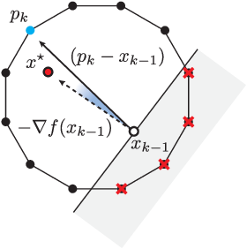

from IPython.display import Image
Image(filename='1.png') 
07-12-2021
This page contains my reading notes on
For a given n \times n doubly stochastic matrix X^{\star} and an \epsilon \geq 0, our goal is to find a small collection of permutation matrices P_{1}, P_{2}, \ldots, P_{k}, and weights \theta_{1}, \theta_{2}, \ldots, \theta_{k} with \sum_{i=1}^{k}\theta_{i} \leq 1 such that \lVert X^{\star} - \sum_{i=1}^{k}\theta_{i}P_{i} \rVert_{F} \leq \epsilon.
- x_{0} = 0, k = 0
- while \lVert x^{\star} - x_{k-1} \rVert_{2} > \epsilon and k \leq k_{max} do
- \alpha \gets (1 - \sum_{i=1}^{k-1}\theta_{i}) \mathbin{/} n^2 // (Why this value)
- p_{k} \gets p \in \mathcal{I}_{k}(\alpha) // Get next permutation matrix
- \theta_{k} \gets \mathrm{STEP}(x^{\star}, x_{k-1}, p_k) // Get next weight based on the new permutation matrix
- x_{k} \gets x_{k-1} + \theta_{k}p_{k}
- k \gets k + 1
- end while
- return (p_{1}, \ldots, p_{k-1}), (\theta_{1}, \ldots, \theta_{k-1})
- x_{0} = 0, k = 0
- while \lVert x^{\star} - x_{k-1} \rVert_{2} > \epsilon and k \leq k_{max} do
- p_k \gets \mathrm{LP}(-\lceil x^{\star} - x_{k-1} \rceil, \mathcal{B}).
- \theta_{k} \gets \mathrm{STEP}(x^{\star}, x_{k-1}, p_k)
- x_{k} \gets x_{k-1} + \theta_{k}p_{k}
- k \gets k + 1
- end while
- return (p_{1}, \ldots, p_{k-1}), (\theta_{1}, \ldots, \theta_{k-1})
- x_{0} \in \mathcal{P}, k = 0
- while \lVert x^{\star} - x_{k-1} \rVert_{2} > \epsilon and k \leq k_{max} do
- p_k \gets \mathrm{LP}(-(x^{\star} - x_{k-1}), \mathcal{B}) // Get the next extreme point
- \theta_{k} \gets (x^{\star} - x_{k-1})^{T}(p_{k} - x_{k-1}) \mathbin{/} \lVert p_{k} - x_{k-1} \rVert_{2}^{2} // Calculate the step size
- x_{k} \gets x_{k-1} + \theta_{k}(p_{k} - x_{k-1}) // Update x
- k \gets k + 1
- end while
- return (p_{1}, \ldots, p_{k-1}), (\theta_{1}, \ldots, \theta_{k-1})
- x_{0} = 0, k = 0
- while \lVert x^{\star} - x_{k-1} \rVert_{2} > \epsilon and k \leq k_{max} do
- \alpha \gets (1 - \sum_{i=1}^{k-1} \theta_i) \mathbin{/} n^2
- p_{k} \gets \mathrm{LP}(\nabla f_{\beta}(x_{k-1}), \mathrm{conv}(\mathcal{I}_{k}(\alpha)))
- \theta_{k} \gets \mathrm{STEP}(x^{\star}, x_{k-1}, p_k)
- x_{k} \gets x_{k-1} + \theta_{k}p_{k}
- k \gets k + 1
- end while
- return (p_{1}, \ldots, p_{k-1}), (\theta_{1}, \ldots, \theta_{k-1})
- x_{0} = 0, k = 0
- while \lVert x^{\star} - x_{k-1} \rVert_{2} > \epsilon and k \leq k_{max} do
- \alpha \gets (1 - \sum_{i=1}^{k-1} \theta_i) \mathbin{/} n^2
- for i = 1,\ldots, \mathrm{max\_rep} do
- p_{i} \gets \mathrm{LP}(\nabla f_{\beta}(x_{k-1}), \mathrm{conv}(\mathcal{I}_{k}(\alpha)))
- \theta_{i} \gets \mathrm{STEP}(x^{\star}, x_{k-1}, p_{k})
- if (\theta_{i} > \alpha) \alpha \gets \mathrm{STEP}(x^{\star}, x_{k-1}, p_{k})
- else exit while loop
- p_{k} \gets p_{i}
- end for
- \theta_{k} \gets \mathrm{STEP}(x^{\star}, x_{k-1}, p_k)
- x_{k} \gets x_{k-1} + \theta_{k}p_{k}
- k \gets k + 1
- end while
- return (p_{1}, \ldots, p_{k-1}), (\theta_{1}, \ldots, \theta_{k-1})
https://github.com/vvalls/BirkhoffDecomposition.jl
# functionsBD.jl
struct polytope
A;
b;
l;
u;
model;
x;
end
@doc raw"""
Solve a linear programing problem
"""
function LP(c, P)
@objective(P.model, Min, c'* P.x)
optimize!(P.model)
return value.(P.x)
end
@doc raw"""
Get a random stochastic matrix
"""
function randomDoublyStochasticMatrix(n; num_perm=n^2)
M = zeros(n, n);
α = rand(num_perm)
α = α / sum(α);
for i = 1:num_perm
perm = randperm(n);
for j = 1:n
M[perm[j], j] += α[i];
end
end
return M;
end
@doc raw"""
Create Birkhoff polytope ``\mathcal{B}`` (Section V-A), which contains all possible doublely stochastic matrices.
Since the paper assumes that the solutions by solving linear programs over are Birkhoff polytope extreme points,
the solutions are permutation matrices (which are also doublely stochastic).
"""
function birkhoffPolytope(n)
# x is a doublely stochastic matrix that is represented by a vector (flattened).
# Use a constant matrix A(M') and a constant vector b to specify that x is doublely stochastic.
M = zeros(n*n, 2*n);
# Specify the sum of each row of x equals to 1
for i = 1:n
M[(i-1)*n*n + (i-1)*n + 1 : (i-1)*n*n + (i-1)*n + n] = ones(n,1);
end
# Specify the sum of each col of x equals to 1
for i = 1:n
for j=1:n
M[n*n*n + (i-1)*n*n + (j-1)*n + i] = 1;
end
end
A = sparse(M');
b = ones(2*n);
model = Model(Clp.Optimizer)
set_silent(model)
@variable(model, 0 <= x[1:n*n] <= 1)
@constraint(model, A * x .== b)
return polytope(A, b, 0, 1, model, x)
endbirkhoffPolytope# stepsizes.jl
@doc raw"""
Get the step size (weight) by taking the minimum non-zero entry of the difference matrix
(masked by the permutation matrix y) between x_star and x.
"""
function getBirkhoffStepSize(x_star, x, y)
return minimum((x_star - x).*y - (y.-1));
endgetBirkhoffStepSize# extremepoints.jl
@doc raw"""
Birkhoff+ (max_rep) Psudocode line 4-10
"""
function getEPBplus(x_star, x, B, max_rep, ε)
n = sqrt(size(x_star, 1))
d = size(x_star, 1);
i = 1;
y = 0;
α = 0;
while(i <= max_rep)
# Calculate \beta for this iteration.
# \beta should become smaller and smaller.
z = Int16.(x_star - x .> ε)
s = getBirkhoffStepSize(x_star, x, z)
beta = (s + ε/d)*0.5
# c is the gradient of the objective function with barrier.
# b is an iterm added to make I_k(\alpha) to be B (Birkhoff polytope).
# See the paragraph in section VI.B after Corollary 2 for b.
c = -ones(d) + beta ./ (x_star - x .+ ε/d)
b = (n/ε).*Int16.(x_star - x .<= α)
y_iter = LP(c + b, B);
# If new solution (y_iter) makes objective function larger/worse (c'*y_iter > c'*y_z),
# fall back to the solution from the last iteration (y_z/x).
y_z = x;
if(c'*y_iter > c'*y_z)
y_iter = y_z
end
# \alpha should be the largest step size found.
# Algorithm terminates when \alpha doesn't increase
α_iter = getBirkhoffStepSize(x_star, x, y_iter);
if(α < α_iter)
α = α_iter;
y = y_iter;
else
return y;
end
i = i + 1;
end
return y
endgetEPBplus (generic function with 1 method)# birkdecomp.jl
@doc raw"""
Birkhoff+ (max_rep)
"""
function birkdecomp(X, ε=1e-12; max_rep=1)
n = size(X, 1); # get size of Birkhoff polytope
x_star = reshape(X, n*n); # reshape doubly stochastic to vector
B = birkhoffPolytope(n); # Birkhoff polytope
ε = max(ε, 1e-15); # fix the maximum minimum precision
max_iter = (n-1)^2 + 1;
x = zeros(n*n); # initial point
extreme_points = zeros(n*n, max_iter); # extreme points (permutation) matrix
θ = zeros(max_iter); # weights vector
approx = Inf; # approximation error
i = 1; # iteration index
while(approx > ε)
# Get next extreme point
y = getEPBplus(x_star, x, B, max_rep, ε)
# Get next weight (step size)
θi = getBirkhoffStepSize(x_star, x, y)
# Update x_k
x = x + θi*y;
# Store the new weight
θ[i] = θi;
# Update the Frobenius norm
approx = sqrt(sum((abs.(x_star-x)).^2));
# Store the new extreme point matrix
extreme_points[:,i] = y;
i = i + 1;
end
return extreme_points[:, 1:i-1], θ[1:i-1]
endbirkdecomp (generic function with 2 methods)# Generate a random doubly stochastic matrix (n is the dimension)
n = 3;
x = randomDoublyStochasticMatrix(n);
P, w = birkdecomp(x);
display(x)
display(P);
display(w);3×3 Array{Float64,2}:
0.0607488 0.590595 0.348656
0.70177 0.0291194 0.269111
0.237482 0.380286 0.3822339×5 Array{Float64,2}:
0.0 0.0 0.0 1.0 0.0
1.0 1.0 0.0 0.0 0.0
0.0 0.0 1.0 0.0 1.0
1.0 0.0 1.0 0.0 0.0
0.0 0.0 0.0 0.0 1.0
0.0 1.0 0.0 1.0 0.0
0.0 1.0 0.0 0.0 1.0
0.0 0.0 1.0 1.0 0.0
1.0 0.0 0.0 0.0 0.05-element Array{Float64,1}:
0.38223288955133716
0.31953666864401353
0.20836217653438616
0.06074883235172196
0.029119432918541188